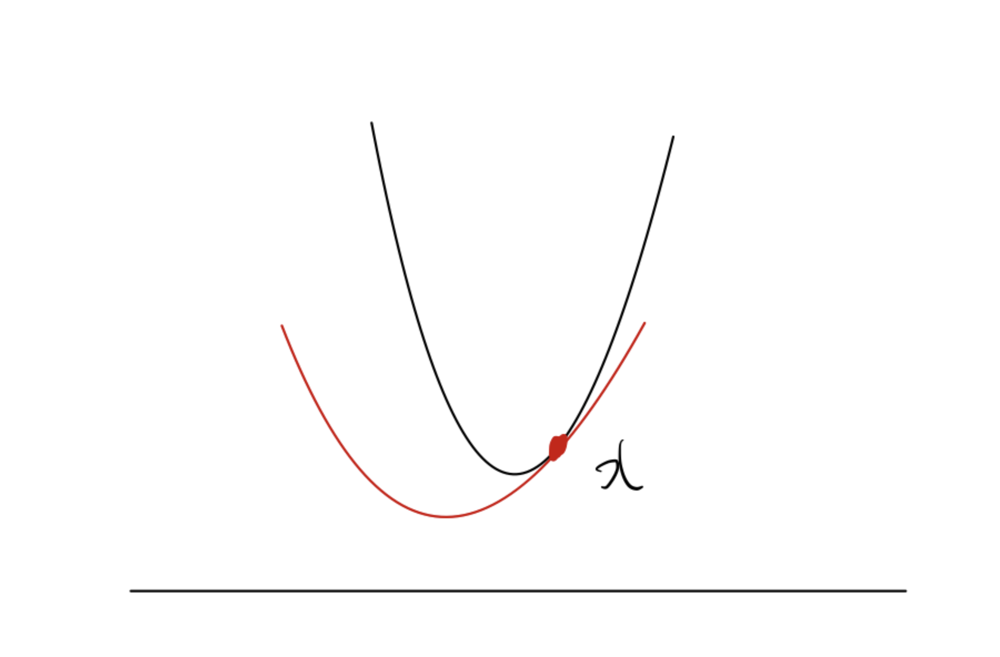
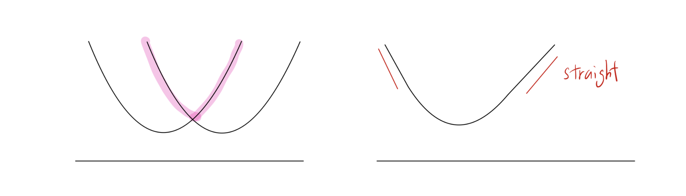
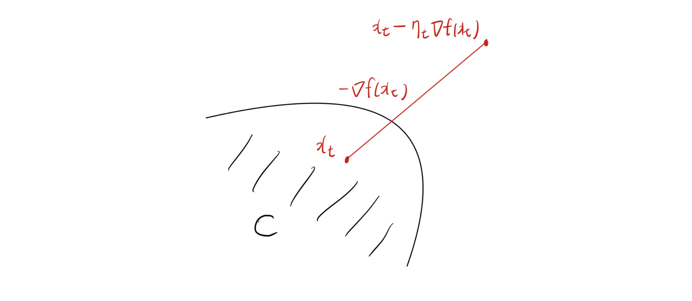
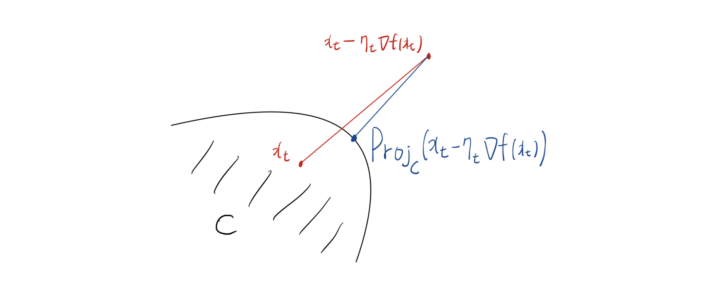

Introduction
- 본 포스트는 수리 및 수치 최적화 강의의 10번째 주제인 강볼록 함수(Strongly Convex Functions)와 제약 조건이 있는 최적화를 위한 사영 경사하강법(Projected Gradient Descent)에 대해 다룹니다. 단순한 볼록(Convex) 함수보다 더 강력한 조건을 가진 강볼록 함수는 머신러닝과 최적화 알고리즘에서 매우 빠른 수렴 속도를 보장하는 핵심적인 개념입니다. 이번 글에서는 강볼록 함수의 수학적 정의부터 시작하여, 평활도(Smoothness)와의 관계, 그리고 제약 집합(Feasible set)이 존재할 때 사용하는 프로젝션(Projection) 기법까지 논리적인 흐름에 따라 살펴보겠습니다.
1. 강볼록 함수 (Strongly Convex Functions)
1.1 강볼록 함수의 정의
- 어떤 함수 \(f\)가 주어졌을 때, 이 함수가 일반적인 볼록 함수보다 더 ‘볼록하게’ 굽어 있다면 이를 강볼록 함수라고 합니다. 수학적으로, 함수 \(f\)가 어떤 \(\alpha>0\)에 대하여 \(l_2\) 노름(norm) 상에서 \(\alpha\)-강볼록(strongly convex)이라는 것은 다음 함수가 여전히 볼록 함수임을 의미합니다:
\[f(x)-\frac{\alpha}{2}||x||_2^2\]
- 즉, 원래 함수 \(f(x)\)에서 이차 함수인 \(\frac{\alpha}{2}||x||_2^2\)를 빼더라도 여전히 볼록성이 유지될 정도로 최소한의 곡률(curvature)을 가지고 있다는 것을 뜻합니다.
보조정리 (Lemma): 만약 함수 \(f\)가 \(l_2\) 노름에서 \(\alpha\)-강볼록이라면, 1차 테일러 전개를 이용한 하한선(lower bound)에 추가적인 이차항이 붙게 됩니다: \[f(y)\ge f(x)+\nabla f(x)^\top(y-x)+\frac{\alpha}{2}||y-x||_2^2\]
- 일반적인 볼록 함수가 접선(평면)을 하한선으로 가지는 반면, 강볼록 함수는 그 아래를 굳건히 받쳐주는 이차 함수 하한선(Quadratic lower bound)을 가집니다.

1.2 평활도(Smoothness)와의 비교
- 강볼록성(Strong Convexity)은 함수의 ’최소 곡률’을 보장하는 반면, 평활도(Smoothness)는 그래디언트의 변화율을 제한하여 ’최대 곡률’을 제한하는 개념입니다.
- 따라서 강볼록 함수라고 해서 반드시 평활한 것은 아니며, 반대로 평활하다고 해서 반드시 강볼록한 것도 아닙니다.

2. 강볼록 함수의 주요 성질
2.1 최적성 간극 (Optimality Gap)
- 강볼록 함수에서는 현재 위치 \(x\)의 그래디언트 크기나 최적해와의 거리를 통해 함숫값의 오차(Optimality gap) 상한과 하한을 명확히 제한할 수 있습니다. 강의 슬라이드에 누락된 수식을 표준 최적화 이론을 바탕으로 복원하면 다음과 같습니다.
정리 (Theorem): 만약 \(f:\mathbb{R}^d\rightarrow\mathbb{R}\)가 \(l_2\) 노름에서 \(\alpha\)-강볼록이라면, 모든 \(x\in\mathbb{R}^d\)에 대하여 다음이 성립합니다: \[\frac{\alpha}{2}||x-x^*||_2^2 \le f(x)-f(x^*)\le \frac{1}{2\alpha}||\nabla f(x)||_2^2\]
- 여기서 \(x^*\)는 \(\min_{x\in\mathbb{R}^d}f(x)\)의 최적해입니다. 이 부등식의 우변은 그래디언트의 크기가 작아질수록 현재 함숫값 \(f(x)\)가 최적값 \(f(x^*)\)에 확실하게 수렴함을 보장하며, 좌변은 최적해와의 거리 자체가 함숫값 차이에 의해 제약됨을 보여줍니다.
2.2 강압성 (Coercivity)
- 강볼록 함수의 또 다른 중요한 성질은 그래디언트의 변화량이 두 점 사이의 거리에 비례하여 커진다는 강압성(Coercivity)입니다.
보조정리 (Lemma): \(f:\mathbb{R}^d\rightarrow\mathbb{R}\)가 \(\alpha\)-강볼록 함수일 때, 임의의 \(x, y \in\mathbb{R}^d\)에 대하여 다음 부등식이 성립합니다: \[(\nabla f(x)-\nabla f(y))^\top(x-y)\ge\alpha||x-y||_2^2\]
3. 경사하강법의 수렴성 (Convergence Analysis)
- 이제 함수의 조건(립시츠 연속성, 평활도 등)에 따라 강볼록 함수에서 경사하강법(Gradient Descent)이 어떻게 수렴하는지 분석해 봅시다.
3.1 립시츠 연속이면서 강볼록한 경우
정리 (Theorem): \(f:\mathbb{R}^d\rightarrow\mathbb{R}\)가 어떤 \(L, \alpha > 0\)에 대해 \(L\)-립시츠(Lipschitz) 연속이고 \(\alpha\)-강볼록이라고 가정합시다. 스텝 사이즈(학습률)를 시간에 따라 감소하는 형태인 \(\eta_t=2/(\alpha(t+1))\)로 설정하여 업데이트한 경사하강법의 반복 시퀀스 \(\{x_t\}_{t=1}^{T+1}\)에 대하여 다음이 성립합니다: \[f\left(\sum_{t=1}^T\frac{2t}{T(T+1)}x_t\right)-f(x^*)\le\frac{2L^2}{\alpha(T+1)}\]
- 여기서 \(x^*\)는 최적해입니다. 이 결과는 강볼록 조건이 주어졌을 때, 가중 평균된 해의 함숫값 오차가 \(O(1/T)\)의 속도로 수렴함을 보여줍니다.
3.2 평활도(Smoothness)와의 결합
- 평활한 강볼록 함수의 수렴성을 보기 전에, 평활도와 관련된 몇 가지 유용한 성질을 짚고 넘어가야 합니다.
보조정리 (Lemma): \(f\)가 \(\beta\)-평활(smooth)하고 \(\beta\ge\alpha\)라면, 새로운 함수 \(f(x)-\frac{\alpha}{2}||x||_2^2\)는 \((\beta-\alpha)\)-평활합니다. 더불어, 어떤 함수 \(f\)가 \(\beta\)-평활할 필요충분조건은 \(g(x)=(\beta/2)||x||_2^2-f(x)\)가 볼록 함수가 되는 것입니다.
공강압성 (Co-coercivity): \(f\)가 볼록하고 \(\beta\)-평활하다면 다음 공강압성이 성립합니다: \[(\nabla f(x)-\nabla f(y))^\top(x-y)\ge\frac{1}{\beta}||\nabla f(x)-\nabla f(y)||_2^2\]
- 이 공강압성과 앞서 다룬 강볼록성의 강압성(Coercivity) 을 결합하면, 평활하면서 동시에 강볼록한 함수에 대해 훨씬 더 강력한 부등식을 도출할 수 있습니다. 원본 슬라이드에 생략된 수식을 채워 넣으면 다음과 같습니다.
보조정리 (Lemma): \(f:\mathbb{R}^d\rightarrow\mathbb{R}\)가 \(\beta\)-평활하고 \(\alpha\)-강볼록할 때, 임의의 \(x, y \in\mathbb{R}^d\)에 대하여 다음이 성립합니다: \[(\nabla f(x)-\nabla f(y))^\top(x-y)\ge \frac{\alpha\beta}{\alpha+\beta}||x-y||_2^2 + \frac{1}{\alpha+\beta}||\nabla f(x)-\nabla f(y)||_2^2\]
3.3 평활하고 강볼록한 함수의 선형 수렴 (Linear Convergence)
- 위의 강력한 성질 덕분에 평활하고 강볼록한 함수에서는 수렴 속도가 비약적으로 빨라집니다.
정리 (Theorem): \(f\)가 \(\beta\)-평활하고 \(\alpha\)-강볼록할 때, 스텝 사이즈를 \(\eta_t=\frac{2}{\alpha+\beta}\)로 일정하게 고정하여 경사하강법을 수행하면 다음과 같은 수렴 결과를 얻습니다: \[f(x_{T+1})-f(x^*)\le\frac{\beta}{2}\exp\left(-\frac{4T}{\kappa+1}\right)||x_1-x^*||_2^2\]
- 여기서 \(x^*\)는 최적해이며, \(\kappa = \beta/\alpha\)는 상태 공간의 조건수(Condition number)를 의미합니다. 이 결과는 반복 횟수 \(T\)에 따라 오차가 지수적(exponentially)으로 감소함을 뜻하며, 최적화 이론에서는 이를 선형 수렴(Linear convergence)이라고 부릅니다.
4. 제약 조건과 사영(Projection)의 도입
- 현실의 최적화 문제들은 모든 공간이 아닌 특정한 제약 집합(Feasible set, \(C\)) 안에서 최적해를 찾아야 하는 경우가 많습니다.
4.1 기존 경사하강법의 한계
- 제약 집합 \(C\)가 있을 때, 기존의 경사하강법 업데이트인 \(x_{t+1}=x_t-\eta_t\nabla f(x_t)\)를 그대로 수행하면 어떤 문제가 발생할까요? 새롭게 계산된 지점이 제약 집합 \(C\) 바깥으로 벗어나버려 실행 불가능한(infeasible) 상태가 될 수 있습니다.

4.2 프로젝션 (Projection)
- 이를 해결하는 가장 직관적이고 자연스러운 방법은, 경사하강법으로 이동한 임시 지점 \(x_t-\eta_t\nabla f(x_t)\)를 다시 제약 집합 \(C\) 안으로 투영(Projection)시키는 것입니다.

- 프로젝션 연산 \(Proj_C(z)\)는 유클리디안 거리를 기준으로 집합 \(C\) 내에서 주어진 점 \(z\)와 가장 가까운 점을 찾는 최적화 문제로 정의됩니다: \[Proj_C(z)=\arg\min_{x\in C}\frac{1}{2}||x-z||_2^2\]
- 이는 \(\arg\min_{x\in C}||x-z||_2\)와 동치입니다.
비확장성 (Non-expansiveness) 보조정리: 볼록 집합에 대한 프로젝션의 핵심 성질은 점들 사이의 거리를 늘리지 않는다는 점입니다. 임의의 \(z\in\mathbb{R}^d\)와 제약 집합 내의 점 \(x\in C\)에 대해 다음이 성립합니다: \[||Proj_C(z)-x||\le||z-x||\]
이러한 프로젝션을 경사하강법 업데이트 직후에 적용하면 , \(x_{t+1}\)은 다음과 같이 정의됩니다: \[x_{t+1}=Proj_C(x_t-\eta_t\nabla f(x_t))=\arg\min_{x\in C}\frac{1}{2}||x-x_t+\eta_t\nabla f(x_t)||_2^2\]
식을 전개하여 정리하면 다음과 동치임을 알 수 있습니다: \[x_{t+1}=\arg\min_{x\in C}\left\{f(x_t)+\nabla f(x_t)^\top(x-x_t)+\frac{1}{2\eta_t}||x-x_t||_2^2\right\}\]
결론적으로 \(x_{t+1}\)은 점 \(x_t\)에서 구한 함수 \(f\)의 2차 근사(Quadratic approximation)를 제약 집합 \(C\) 내에서 최소화하는 해를 찾는 과정과 완벽히 일치합니다. 또한 비확장성에 의해 최적해 \(x^*\)와의 거리가 투영 과정에서 더 멀어지지 않음이 보장됩니다: \[||x_{t+1}-x^*||_2\le||x_t-\eta_t\nabla f(x_t)-x^*||_2\]
5. 제약이 있는 최적화를 위한 알고리즘과 수렴성
- 위의 프로젝션 개념을 실제 알고리즘으로 구현한 두 가지 방법을 소개합니다.
5.1 사영 경사하강법 (Projected Gradient Method)
- 함수가 미분 가능할 때 사용하는 기본적인 방법입니다.
Algorithm 1: Projected gradient method
- 제약 집합 내의 점 \(x_1 \in C\) 로 초기화합니다.
- \(t=1,...,T\) 동안 다음을 반복합니다:
- 스텝 사이즈 \(\eta_t>0\)에 대해, \(x_{t+1}=Proj_C\{x_t-\eta_t\nabla f(x_t)\}\)
- 업데이트된 점들의 스텝 사이즈 가중 평균을 반환합니다: \((\sum_{t=1}^T\eta_t)^{-1}\sum_{t=1}^T\eta_t x_t\)
5.2 사영 서브그래디언트 방법 (Projected Subgradient Method)
- 목적 함수가 미분 불가능한 점을 포함할 경우에는 그래디언트 대신 서브그래디언트(Subgradient) \(g_t\in\partial f(x_t)\)를 사용하여 동일한 프레임워크를 적용할 수 있습니다.
Algorithm 2: Projected subgradient method
- \(x_1 \in C\) 초기화
- \(t=1,...,T\) 에 대해:
- 서브그래디언트 계산: \(g_t\in\partial f(x_t)\)
- 프로젝션 업데이트: \(x_{t+1}=Proj_C\{x_t-\eta_t g_t\}\) (\(\eta_t>0\))
- 평균값 반환: \((\sum_{t=1}^T\eta_t)^{-1}\sum_{t=1}^T\eta_t x_t\)
5.3 알고리즘의 수렴성 분석 (Convergence Results)
- 사영 서브그래디언트 방법에서는 프로젝션의 비확장성 덕분에 매 스텝마다 다음 거리에 대한 상한이 보장됩니다. \[||x_{t+1}-x^*||_2\le||(x_t-\eta_t g_t)-x^*||_2\] (단, \(x^*\)는 \(min_{x\in C}f(x)\)의 최적해)
정리 (립시츠 연속인 함수의 경우): \(f:\mathbb{R}^d\rightarrow\mathbb{R}\)가 볼록 함수이고, 모든 \(x\in\mathbb{R}^d\)의 임의의 서브그래디언트에 대해 \(||g||_2\le L\)을 만족한다고 합시다. 스텝 사이즈를 \(\eta_t=||x_1-x^*||_2/L\sqrt{T}\)로 잡고 사영 서브그래디언트 방법을 수행하면 다음과 같은 수렴성을 얻습니다: \[f\left(\frac{1}{T}\sum_{t=1}^T x_t\right)-f(x^*)\le\frac{L||x_1-x^*||_2}{\sqrt{T}}\] (단, \(x^*\)는 제약 조건 \(C\) 내의 최적해)
정리 (평활한 함수의 경우): 반면 \(f:\mathbb{R}^d\rightarrow\mathbb{R}\)가 제약이 있는 \(\beta\)-평활 볼록 함수일 때, 고정된 스텝 사이즈 \(\eta_t=1/\beta\)를 사용한 사영 경사하강법은 더 빠른 수렴성을 가집니다: \[f(x_T)-f(x^*)\le\frac{3\beta||x_1-x^*||_2^2+f(x_1)-f(x^*)}{T}\] (단, \(x^*\)는 제약 조건 \(C\) 내의 최적해)
- 함수가 부드럽고 미분 가능하므로 가중 평균이 아닌 마지막 업데이트 지점 \(x_T\)의 값 자체가 \(O(1/T)\) 속도로 수렴함을 보장할 수 있습니다.